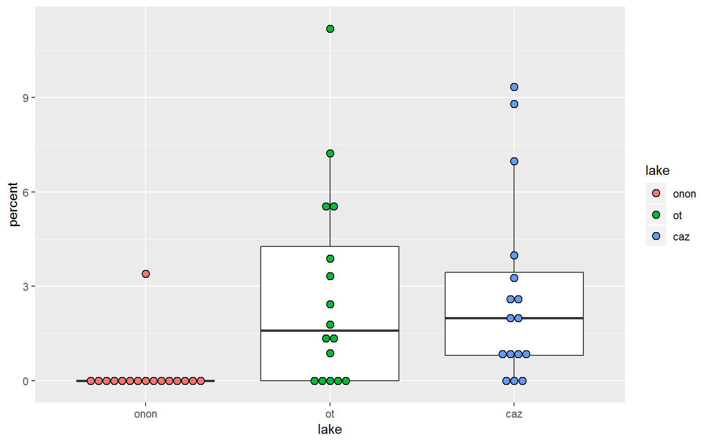

19 ggplot2
- Link: https://ggplot2.tidyverse.org/
- Index of Functions: https://ggplot2.tidyverse.org/reference/index.html
- Cheat Sheet: https://github.com/rstudio/cheatsheets/blob/master/data-visualization-2.1.pdf
- Chapter of R for Data Science:
- R Graphics Cookbook: http://www.cookbook-r.com/Graphs/
library(ggplot2)
suppressPackageStartupMessages(
library(dplyr)
)
library(tidyr)19.0.1 Example Data
Import the example data. This data represents benthic macroinvertebrate data collected in the littoral zone of Onondaga, Otisco, and Cazenovia lakes.
taxa.df <- file.path("data",
"zms_thesis-macro_2017-06-18.csv") %>%
read.csv(stringsAsFactors = FALSE)Preprocess taxa.df to just represent order-level taxonomic counts per sample. For more details about this process see the summarize section.
ord.df <- taxa.df %>%
select(unique_id, station_id, lake, order, count) %>%
group_by(unique_id, station_id, lake, order) %>%
summarize(count = sum(count)) %>%
ungroup() %>%
group_by(station_id, lake, order) %>%
summarize(count = mean(count)) %>%
ungroup()
DT::datatable(ord.df, options = list(columnDefs = list(list(className = 'dt-center', targets = 0:3))))Calculate the calculate relative abundance (i.e., the percentage of the sample represented by each taxon) of each taxon within a sample. For more details about this process see the group_by section.
pct.df <- ord.df %>%
group_by(station_id) %>%
mutate(total = sum(count),
percent = count / total * 100) %>%
ungroup() %>%
tidyr::complete(order,
nesting(station_id, lake, total),
fill = list(count = 0, percent = 0)) %>%
mutate(lake = factor(lake, levels = c("onon", "ot", "caz")))19.0.2 ggplot
- Definition: “initializes a ggplot object.” (quote from link below)
- Link: https://ggplot2.tidyverse.org/reference/ggplot.html
Generally, you want to start with a ggplot() call. Here we can see a blank figure template returned when ggplot() is called and pct.df is specified as data. The pipe operator can be used to pipe data into ggplot() but it cannot be used to chain subsequent ggplot2 functions together.
ggplot(pct.df)
pct.df %>%
ggplot()
19.0.3 aes
- Definition: specify aesthetics (x-axis, y-axis, color, fill, shape, size, linetype, etc.)
- Link: https://ggplot2.tidyverse.org/reference/aes.html
To start to format the figure, you will want to use aes(). When using aes() within ggplot(), you are specifying global variables. For instance, you will generally specify the columns, from the specified data frame (e.g., pct.df), that will represent your x-axis and y-axis. In the example below, the lake column represents the x-axis, while the percent column will represents the y-axis. Now we have a template for our figure but we will want to add layers (boxplot, scatter plot, bar plot) to this feature to visualize our data.
pct.df %>%
ggplot(aes(x = lake, y = percent))
### Adding Layers (+)
ggplot2 does not recognize the pipe operator (%>%), instead it uses + to add components to a plot.
Now let’s add data to the plot by adding a + at the end of ggplot() and then specifying the plot type we are interested in creating. All plot functions in ggplot2 start with the prefix “geom_”.
19.0.4 geom_boxplot
- Definition: create box and whisker plots
- Link: https://ggplot2.tidyverse.org/reference/geom_boxplot.html
Here we will create a box and whisker plot using geom_boxplot(). For this example, we will only focus on the percentage of Ephemeroptera (Mayflies) found within each lake by using the filter() function before the ggplot() function. The aesthetics have been specified within ggplot(), therefore geom_boxplot() can be called without any arguments.
pct.df %>%
filter(order == "ephemeroptera") %>%
ggplot(aes(x = lake, y = percent)) +
geom_boxplot()19.0.4.1 Fill
The color of the interquartile boxes can be specified with fill. In this example, fill = lake, which ggplot2 will automatically realize represents three categories and use a default color palette that is used to automatically color the plot.
fill is specified within aes() within the ggplot() , and therefore this specification carries through to the subsequent geom_boxplot() call.
pct.df %>%
filter(order == "ephemeroptera") %>%
ggplot(aes(x = lake, y = percent, fill = lake)) +
geom_boxplot()19.0.4.2 Color
Color can be sepecified in a similar manner to Fill. In the plot below, we can see the difference between color and fill (the previous plot).
pct.df %>%
filter(order == "ephemeroptera") %>%
ggplot(aes(x = lake, y = percent, color = lake)) +
geom_boxplot()
When I first started using ggplot2, I would frequently try to put the color or other aesthetic arguments outside of the aes() call. For example, in ggplot(aes(x = lake, y = percent), color = lake), color = lake is not within the aes() call. Therefore, it has no effect on the plot (i.e., there is no color added to the plot).
pct.df %>%
filter(order == "ephemeroptera") %>%
ggplot(aes(x = lake, y = percent), color = lake) +
geom_boxplot()
aes() and the color or other aesthetics can also be specified within the geom_boxplot() call. This allows you to be more specific of which feature you want to recieve a given aesthetic.
pct.df %>%
filter(order == "ephemeroptera") %>%
ggplot(aes(x = lake, y = percent)) +
geom_boxplot(aes(color = lake))Additionally, if you want to specify specific colors not based on features from your data frame (e.g., lake), then you can specify these colors within the geom_boxplot() call. Note, that color is NOT specified within an aes() call.
pct.df %>%
filter(order == "ephemeroptera") %>%
ggplot(aes(x = lake, y = percent)) +
geom_boxplot(color = c("purple", "orange", "brown"))If you do attempt to wrap manually specified colors, like color = c("purple", "orange", "brown"), within aes(), you will get an error.
pct.df %>%
filter(order == "ephemeroptera") %>%
ggplot(aes(x = lake, y = percent)) +
geom_boxplot(aes(color = c("purple", "orange", "brown")))## Error: Aesthetics must be either length 1 or the same as the data (48): colour
Also, trying to manually specify colors within the ggplot() call will have no effect on the plot.
pct.df %>%
filter(order == "ephemeroptera") %>%
ggplot(aes(x = lake, y = percent), color = c("purple", "orange", "brown")) +
geom_boxplot()
19.0.4.3 geom_point
- Definition: add points to a plot
- Link: https://ggplot2.tidyverse.org/reference/geom_point.html
Let’s add another layer to the plot above. geom_point() can be used to vizualize where the data points actually fall relative to the box and whisker plots.
pct.df %>%
filter(order == "ephemeroptera") %>%
ggplot(aes(x = lake, y = percent)) +
geom_boxplot() +
geom_point()19.0.4.4 geom_jitter
- Definition: add points to a plot that have been randomly offplaced from their actual position to avoid point overlap
- Link: https://ggplot2.tidyverse.org/reference/geom_jitter.html
In the geom_point plot above, it is not possible to know if a point represents a single sample or if there are more than one samples with the same value overlaid on one another. geom_jitter() can be used to randomly offset the points from thier actual position to avoid the overlap issue present in geom_point().
In this example, geom_jitter() is used to offest the points overlaid on the box and whisker plots. The points are colored by lake within this call: geom_jitter(aes(color = lake)). Additionally, the outliers plotted from geom_boxplot() are hidden with geom_boxplot(outlier.shape = NA). These outliers are represented in the geom_jitter() call; therefore, if the outliers were not removed from geom_boxplot(), these points would be represented twice.
pct.df %>%
filter(order == "ephemeroptera") %>%
ggplot(aes(x = lake, y = percent)) +
geom_boxplot(outlier.shape = NA) +
geom_jitter(aes(color = lake))Here we can see what happens if color is specified within the ggplot() call. Now the box and whisker lines and the points are colored by lake. This is in contrast to the last plot, where only the points were colored by lake.
pct.df %>%
filter(order == "ephemeroptera") %>%
ggplot(aes(x = lake, y = percent, color = lake)) +
geom_boxplot(outlier.shape = NA) +
geom_jitter()19.0.4.5 geom_violin
- Definition: create violin plots a way of visualizing point density and distribution
- Link: https://ggplot2.tidyverse.org/reference/geom_violin.html
This plot helps us to see that there are a lot of samples from Onondaga Lake (“onon”) that have no Ephemeroptera (percent = 0).
pct.df %>%
filter(order == "ephemeroptera") %>%
ggplot(aes(x = lake, y = percent, fill = lake)) +
geom_violin()19.0.4.6 geom_dotplot
- Definition: create dot plots or beeswarm plots a way of visualizing point density and distribution
- Link: https://ggplot2.tidyverse.org/reference/geom_dotplot.html
Similar to [violin_plots], geom_dotplot() can be more informative than a box and whisker plot.
pct.df %>%
filter(order == "ephemeroptera") %>%
ggplot(aes(x = lake, y = percent, fill = lake)) +
geom_dotplot(binaxis = "y",
stackdir = "center",
binwidth = 0.25)geom_dotplot() could be overlaid on geom_boxplot(), which may be a better than a geom_jitter example.
pct.df %>%
filter(order == "ephemeroptera") %>%
ggplot(aes(x = lake, y = percent)) +
geom_boxplot(outlier.shape = NA) +
geom_dotplot(aes(fill = lake),
binaxis = "y",
stackdir = "center",
binwidth = 0.25)
19.0.4.7 geom_bar
- Definition: create bar plots
- Link: https://ggplot2.tidyverse.org/reference/geom_bar.html
For this section, the data will need to be summarized by lake. The data is aggregated by lake and order, and the median abundance (count) is calculated. The top five taxa observed are retained as normal but the remaining taxa are lumped and reclassified as “Other” (forcats::fct_lump(factor(order), n = 5, w = percent)). The taxa are then sorted in descending order based on the taxa most commonly observed (forcats::fct_reorder(order, percent, median, .desc = TRUE)).
abund.df <- pct.df %>%
group_by(lake, order) %>%
summarise(count = median(count)) %>%
ungroup() %>%
mutate(order = forcats::fct_lump(factor(order),
n = 5,
w = count),
order = forcats::fct_reorder(order, count, median, .desc = TRUE),
lake = factor(lake, c("onon", "ot", "caz")))
DT::datatable(abund.df, options = list(scrollX = TRUE))Using geom_bar(), we can generate a bar plot. state = "identity" must be used when a y value is specified in aes(); otherwise, ggplot2 will simiply count the number of x value instances to create a y-axis count.
WARNING: This plot is a quick example of geom_bar() and is not a good representation of the data. In this case, the median abundance was calculated for each taxon within each lake. geom_bar() is summing the median values per taxon per lake to produce this figure.
abund.df %>%
ggplot(aes(x = order, y = count)) +
geom_bar(stat = "identity")As the warning above notes, the above plot is not a great representation of the data because it essentially sums the three median abundance values per taxon per lake to produce the bars. We can see this breakdown by adding fill = TRUE. This is also a poor way of view this data.
abund.df %>%
ggplot(aes(x = order, y = count, fill = lake)) +
geom_bar(stat = "identity")position = "dodge" can be added to the geom_bar() call to make the bars for each lake appear side-by-side.
abund.df %>%
ggplot(aes(x = order, y = count, fill = lake)) +
geom_bar(stat = "identity",
position = "dodge")19.0.4.7.1 Stacked Bar Plots
Another great way to visualize this data is to create stacked bar plots. Stacked bar plots are almost always the better alternative to pie charts. In general, stack bar charts provide a more straight forward representation of quantity, which makes it easier to compare multiple stacked bar charts, then multiple pie charts.
- Note that in this section the x-axis now represents
lake, the y-axis representscount, and the fill representsorder.
Stacked bar plots can be created by adding position = "stack" to the geom_bar() call. This information is exactly the same as the geom_bar() plot above, where position = "dodge" but it is more condensed.
abund.df %>%
mutate(order = forcats::fct_reorder(order, count, median)) %>%
ggplot(aes(x = lake, y = count, fill = order)) +
geom_bar(stat = "identity",
position = "stack")Stacked bar plots can also be created by adding position = "fill" to the geom_bar() call. This effectively calculates relative abundance, the percentage each taxon represents within a lake. This normalizes the data and makes it easier to compare between lakes.
abund.df %>%
mutate(order = forcats::fct_reorder(order, count, median)) %>%
ggplot(aes(x = lake, y = count, fill = order)) +
geom_bar(stat = "identity",
position = "fill")19.0.4.8 geom_point (Scatter Plot)
- Definition: add points to a plot
- Link: https://ggplot2.tidyverse.org/reference/geom_point.html
Creating a scatter plot is probably a more common use for geom_point() then the use from the geom_point section above.
The pct.df data frame is converted from a long to a wide data format using spread. This data will be used throughout this section.
wide.df <- pct.df %>%
select(station_id, lake, percent, order) %>%
spread(order, percent)Diptera and Amphipoda were the two must frequently identified taxonomic orders in this data set. Let’s see if there is a relationship between these organisms by plotting counts of Diptera on the x-axis and counts of Amphipoda on the y-axis. geom_point() is used to create a scattter plot. There appears to be an inverse relationship between the number of amphipods observed and the number of diptera observed.
wide.df %>%
ggplot(aes(x = diptera, y = amphipoda)) +
geom_point()We can color the points by lake to see if this pattern is consistent accross lakes.
wide.df %>%
ggplot(aes(x = diptera, y = amphipoda)) +
geom_point(aes(color = lake))19.0.4.9 geom_line
- Definition: draw a line between points
- Link: https://ggplot2.tidyverse.org/reference/geom_path.html
A common mistake I make is to use geom_line() instead of geom_smooth(). geom_line() will connect points direcetly but I ussually want a linear model.
wide.df %>%
ggplot(aes(x = diptera, y = amphipoda)) +
geom_point(aes(color = lake)) +
geom_line()19.0.4.10 geom_smooth
- Definition: plot a linear model (e.g., linear model, LOESS)
- Link: https://ggplot2.tidyverse.org/reference/geom_smooth.html
geom_smooth() allows you to specify a method, such as “lm” (linear model) or “loess” (LOESS) and a formula (such as y ~ x). In the figure below, a linear model is created using all of the data. The blue line represents the linear model and the gray band represents the standard error around the model.
wide.df %>%
ggplot(aes(x = diptera, y = amphipoda)) +
geom_point(aes(color = lake)) +
geom_smooth(method = "lm", formula = y ~ x)Maybe we want to create a linear model per lake. This can be done by specifying color = lake within the ggplot() aes() call. Now we can see that all lakes have a similar slope but Otisco Lake has less variability in Amphipoda and Diptera counts.
wide.df %>%
ggplot(aes(x = diptera, y = amphipoda, color = lake)) +
geom_point() +
geom_smooth(method = "lm", formula = y ~ x)The standard error bands in the figure above make it difficult to read the plot. These bands can be removed by specifying se = FALSE in the geom_smooth() call.
wide.df %>%
ggplot(aes(x = diptera, y = amphipoda, color = lake)) +
geom_point() +
geom_smooth(method = "lm", formula = y ~ x, se = FALSE)We may also be interested in creating a LOESS curve for all of the data. This can be done by specifying method = "loess" within geom_smooth().
wide.df %>%
ggplot(aes(x = diptera, y = amphipoda)) +
geom_point(aes(color = lake)) +
geom_smooth(method = "loess", formula = y ~ x)Again, color and fill can be specified in the ggplot() aes() call to apply these features globably. The plot below shows a LOESS curve for each lake. color influenced the point and line color in the plot, while fill influenced the color of the standard error bands.
wide.df %>%
ggplot(aes(x = diptera, y = amphipoda, color = lake, fill = lake)) +
geom_point(aes(color = lake)) +
geom_smooth(method = "loess", formula = y ~ x)19.0.4.11 facet_wrap
- Definition: replicate a plot by a specified feature or features
- Link: https://ggplot2.tidyverse.org/reference/facet_wrap.html
facet_wrap() is one of my favorite functions. It allows you to create multiple plots at once base on a specified feature or features.
For this example the data are modified in a manner that will allow us to compare the counts of each order to Diptera counts. The ~order within facet_wrap() specifies that we want to aggregate and loop through each unique string in the order column.
pct.df %>%
select(station_id, lake, percent, order) %>%
spread(order, percent) %>%
gather(order, count, amphipoda:veneroida, -diptera) %>%
ggplot(aes(x = diptera, y = count, color = lake, fill = lake)) +
geom_point(aes(color = lake)) +
geom_smooth(method = "lm", formula = y ~ x, se = FALSE) +
facet_wrap(~order)The defaults for the facet_wrap() arguements above make it a little hard to read all of the plots becuase they do not have the range of the Diptera vs. Amphipoda. the scales arguement can be used to “free” all of the axis (scales = "free"). This scales each of the x- and y-axes ranges specific to each plot, rather than standardizing across all plots.
- scales
- “free_x” = y-axis standardized across plots but x-axis is specific to each plot
- “free_y” = x-axis standardized across plots but y-asix is specific to each plot
- “free” = both x- and y-axes are specific to each plot
pct.df %>%
select(station_id, lake, percent, order) %>%
spread(order, percent) %>%
gather(order, count, amphipoda:veneroida, -diptera) %>%
ggplot(aes(x = diptera, y = count, color = lake, fill = lake)) +
geom_point(aes(color = lake)) +
geom_smooth(method = "lm", formula = y ~ x, se = FALSE) +
facet_wrap(~order,
scales = "free")Additionally, ncol (number of columns) can be used to modify the organization of figures.
pct.df %>%
select(station_id, lake, percent, order) %>%
spread(order, percent) %>%
gather(order, count, amphipoda:veneroida, -diptera) %>%
ggplot(aes(x = diptera, y = count, color = lake, fill = lake)) +
geom_point(aes(color = lake)) +
geom_smooth(method = "lm", formula = y ~ x, se = FALSE) +
facet_wrap(~order,
scales = "free",
ncol = 1)We can use more than one feature to facet_wrap() by. For example, in the call below the plots are aggregated by order and lake (~order + lake).
pct.df %>%
select(station_id, lake, percent, order) %>%
spread(order, percent) %>%
gather(order, count, amphipoda:veneroida, -diptera) %>%
ggplot(aes(x = diptera, y = count, color = lake, fill = lake)) +
geom_point(aes(color = lake)) +
geom_smooth(method = "lm", formula = y ~ x, se = FALSE) +
facet_wrap(~order + lake,
ncol = 3)